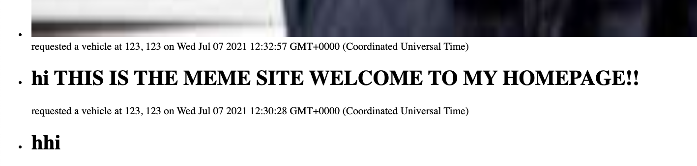

Not Uber is a Ride-Hailing service that allows users call upon rides from strangers to get to their destination. I'm a security consultant hired by Not Uber to analyze and conduct tests and perform a security assement on the Not Uber System
The tools that I used were curl, the web Safari Browser for Mac OS X, and the Chrome Web Browser for Mac OS X. The operating system and device was my own personal laptop running Mac OS X Catalina. In terms of testing I analyzed the source code and tried to come up with exploits from the flaws that I saw. The server which it is hosted on is through Heroku.
In my findings I have found many vulnerabilities such as being able to retrieve all passenger info from the Postgre SQL Database, the ability to have scripts inserted into the server HTML response pages, and ability to tamper with the server site.
Issue: The https://jordan-marsh.herokuapp.com/ site was easily able to be manipulated and changed so content on the site could be added such as images or videos.
Location: app.get('/', function(request, response) and app.post('/rides', function(request, response)
Severity: Low / Medium depending on objective. If it is just inserting a funny image then it would be classified as low, but if the intent was to insert a link in which the user clicks on and redirects to a unknown website then I would classify that as a medium threat.
Description of Issue:
In the image above you can see that information that is retrieved from the client under the username can be anything since its only checking if there exists a string. This is then stored into the database. If this string was code then code would be stored within the database
The image above shows that it is retriving the data above from the database, if the information stored was html code in a string then the html could have images tags or videos embeded so it would render the videos or images that we had put in there prior and then it is sent as a response back and rendered into html.
Proof of Vulnerability:
Example 1:
Example 2:
Based off examples 1 and example 2 I demonstrate that you can embed Spotify playlist's, YouTube videos, images, and your own HTML code
Curl command (Embed the Youtube video)
curl -X POST -d 'username=<iframe width="560" height="315" src="https://www.youtube.com/embed/iLycuRm1V0Q" title="YouTube video player" frameborder="0" allow="accelerometer; autoplay; clipboard-write; encrypted-media; gyroscope; picture-in-picture" allowfullscreen></iframe>' -d 'lat=123' -d 'lng=123' https://jordan-marsh.herokuapp.com/rides
Curl command (Embed the Spotify playlist)
curl -X POST -d 'username=<iframe src="https://open.spotify.com/embed/playlist/37i9dQZF1DXaPCIWxzZwR1" width="300" height="380" frameborder="0" allowtransparency="true" allow="encrypted-media"></iframe>' -d 'lat=123' -d 'lng=123' https://jordan-marsh.herokuapp.com/rides
Curl command (Manipulate Content)
curl -X POST -d 'username=<h1>hhi</h1>' -d 'lat=123' -d 'lng=123' https://jordan-marsh.herokuapp.com/rides
Issue: The https://jordan-marsh.herokuapp.com/ site was easily manipulated so that scripts can be embedded in the site.
Location: app.get('/', function(request, response) and app.post('/rides', function(request, response)
Severity: High and is a major issue because if scripts can be embedded into the website and ran than the code itself can be malicious and cause harm to the user.
Description of Issue:
In the image above you can see that information that is retrieved from the client under the username can be anything since its only checking if there exists a string. This is then stored into the database. If this string was code then code would be stored within the database. This issue is similar to the issue prior but instead of embedding images or videos we are embedding a script.
The image above shows that it is retriving the data above from the database, if the information stored was html code with a script tag in a string then the html could have scripts so it would be able to run scripts that we had put in there prior and then it is sent as a response back and the script can be ran.
Proof of Vulnerability:
Example: (Before)
Example: (After)
Based off Example: (Before) and Example: (After) I demonstrate that you can embed a script into the website and once the button is clicked it sets off a javascript script which displays the latitude of your location.
Curl command (Embedded Script)
curl -X POST -d 'username=<button onclick="getLocation()"></button>
<p id="demo"></p>
<script>
var x = document.getElementById("demo");
function getLocation() {
if (navigator.geolocation) {
navigator.geolocation.getCurrentPosition(showPosition);
} else {
x.innerHTML = "Geolocation is not supported by this browser.";
}
}
function showPosition(position) {
x.innerHTML = position.coords.latitude;
}
</script>' -d 'lat=123' -d 'lng=123' https://jordan-marsh.herokuapp.com/rides
In this example from the curl command I got the geo location of the user's location and was able to post the latitude location of the user from this script
Issue: The https://jordan-marsh.herokuapp.com/passenger.json site was easily manipulated so that a SQL query can be injected and manipulated to return all the passengers in the database.
Location: app.get('/passenger.json', function(request, response)
Severity: High and is a major issue because the user data can be exposed and is a major breach in privacy
Description of Issue:
In the image above you can see where the query from the user is used in order to look up the specific user from the table, but what can go wrong is that a user can input a SQL query into where "usernameEntry" is and retrieve all the data from the table.
Proof of Vulnerability:
Example: (SQL Injection)
Based off Example: (SQL Injection) I demonstrated that you are able to retrieve all the passenger data from the passenger table by injecting SQL query in where "username" would be in the request.
To accomplish this I injected this command within the username entry where ' or ''=' so that I could the query will always be True and when completing the query it will show all the passenger data. Once I was able to see that it was in the database by visiting https://jordan-marsh.herokuapp.com/ I then went to https://jordan-marsh.herokuapp.com/passenger.json?username=' or ''=' where all the passenger data now is displayed
Curl command (SQL Inject)
curl -X POST -d "username=' or ''='&lat=123&lng=104" https://jordan-marsh.herokuapp.com/rides
To conclude one key important factor in this lab is to check user input and never trust user input because of these attacks. More recommendations would include tests by multiple people to discover more vulnerabilities as more pairs of eyes look at the code the more vulnerabilities could be discovered and patched.